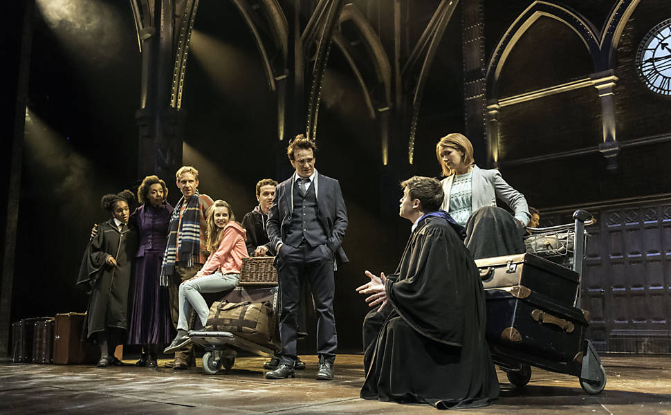
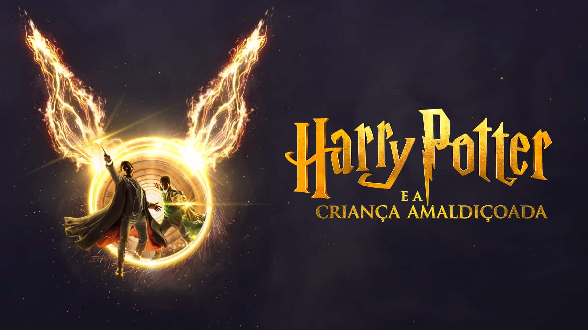
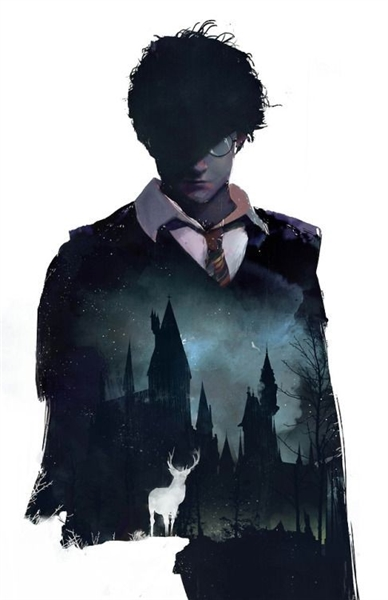

O mundo mágico de Harry Potter não terminou com a última página de Relíquias da Morte. Desde que a série foi lançada, milhões de fãs ao redor do mundo mergulharam na criação de suas próprias histórias, personagens e universos alternativos. As fanfics de Harry Potter são uma parte essencial dessa magia contínua, permitindo que os leitores explorem novos caminhos para Harry, seus amigos e até mesmo seus inimigos, como nunca antes visto.
As fanfics (abreviação de "fan fictions", ou "ficções de fãs") são histórias criadas por fãs que tomam os personagens, cenários e enredos de uma obra original e os reimaginam, muitas vezes colocando-os em novas aventuras ou explorando aspectos que os livros não abordaram. No caso de Harry Potter, as fanfics podem se passar em qualquer ponto da linha do tempo da saga: desde a infância de Harry até os eventos que acontecem após a derrota de Voldemort.
As fanfics de Harry Potter não são apenas uma forma de entretenimento; elas criam uma rede global de fãs que interagem, compartilham ideias e discutem teorias sobre o mundo mágico. Muitos fãs criaram comunidades online, onde as histórias podem ser publicadas e comentadas por outros. Sites como FanFiction.net, Archive of Our Own (AO3) e Wattpad têm milhões de histórias de Harry Potter que vão de pequenas fábulas a romances longos e bem elaborados. Além disso, algumas fanfics chegaram a ser tão populares que inspiraram adaptações ou até mesmo geraram discussões em torno da "fanon" (a versão dos fãs sobre determinados eventos ou personagens) versus o cânone original. Expandindo o alcance do universo criado por J.K. Rowling
As fanfics de Harry Potter continuam a crescer e evoluir, mantendo o legado da série vivo através de novas gerações de fãs. Elas oferecem um espaço onde a criatividade pode florescer sem limites, e onde os leitores podem reimaginar a história de formas infinitas. Mais do que uma simples expansão do universo, as fanfics representam a paixão dos fãs e sua conexão com os personagens e os mundos que amam. Por meio de suas fanfics, os fãs de Harry Potter criam uma comunidade em constante evolução, onde a magia nunca acaba – apenas se transforma.
